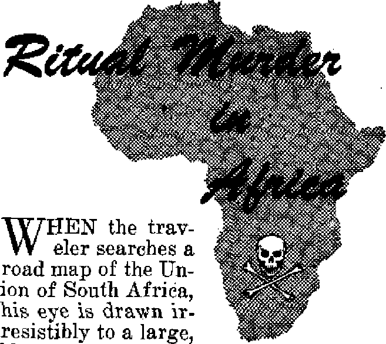

‘’Awake!** correspondent aboard the Watchtower Society % boat reports on its adventures and work
Proof that Jehovah’s witnesses are denied free worship by both the Greek government and the rebel forces
Gruesome killings in the mountain fastnesses of Basutoland
Will she solve the problems that confront her?
ml Adventure with the Watchtower Society’s boat
THE MISSION OF THIS JOURNAL
News sources that are able to keep you awake to the vital Issues of cur times must be unfettered by censorship and celfish interests. “Awake 1,J has no fetters. It recognize* factst face# facts, is free to publish facts. It is not bound by political ambitions or obligations; if is unhampered by advertisers whose toes must not be trodden on; it is unprejudiced by traditional creeds. This journal keeps Itself free that it may speak freely to you. But it does not abuse its freedom. It maintains integrity to truth.
“Awake 1** uses the regular news channels, but b not dependent on them. Its own correspondents ore on all continents, in scores of nations. From the four corners of the earth their unccnsored, <yn-the-acene# reports come to you through these columns. This journal’# viewpoint is not narrow, but b international. It is read in many nations, in many languages, by persons of ail ages. Through its pages many fields of knowledge pass in review^govemment, commerce, religion, history, geography, science, social conditions, natural wonders-—why, its coverage is as broad aa the earth and as high as the heavens,
"Awake !" pledges itself to righteous principles, to exposing hidden foes and subtle dangers, to championing freedom for all, to comforting mourners and strengthening those disheartened by the failures of a delinquent world, reflecting sure hope for the establishment of a righteous New World.
Get acquainted with "AwakeT Keep awake by reading “Awake!"
PUBJ.JBHED SmifOKTHLT Bl WATCHTOWER BIBLE A24D TRACT SOCIETY INC.
117 Adami Street Brooklyn 1, N. Y.t U.R.A.
> IT. GJtt^f Sun fix. feecreiarp
Fiv* cent* ■ copy Ong Ooilir a yur
be artit bi Ui yra eoj«-t7 In with rr«il»tj<o eg [iirictH
MTt ftt'lwi 5t HJinicf HtrpitUm** NCttpKO it Pr»Urn frgM L-nujU-W wiwt m oftea 1* kr*Led, hj mney trJ«r onir S*4acrJptlM
nut iti ditenm cmunriet >n fert ititid In Jw*I t^rrfxr.
N»tJM «f utlMUw 1*llb rurt-il Mint) U g*m it h«tt 1n<j Iwm bcfvn iuMcr.ct.in
Ectgred u jgecod-dL« natur it IruAklTD, N.
Cki*9* «t iMrttt whw seat to yjr o<r« inaj fee ixreeUd gSertlw with in mt mcntra. Sued jucr •'! ii fell mi tlW.tsl
OKm furls Sufeseriptlan Rati
AtHrlti, U,|, II’ AOnu Bk. 1. N.Y. »!
A hl till li, 11 ikroferd Id. biri'.h'IcM. N.s.W. fti tfeUNi. 10 Irvin An . 1»r«Aj Out*"is II Et|liBd, 31 (rtres 'Te-ftn Lx.oj;■, 4, a 6t Uitfe Aftta, feutoc Wgu*. Cipg Tova Ai
T., let «c n«nb 5 imb" fn^uc in u. s. a.
CONTENTS
Greek Mir.ifd.pr of Public Order
Receives a Letter
Exiled Bemuse of Their Faith
Witnesses uj Greece Not Communists
Greek Comm uniats Murder Witnesses
Whom the Government Executed
Ritual Murder in Africa
Animal Antics
El Salvador, Land of Natural and
Political Volcanoes
Heated Politic
Political Volcano Explode
3
4
5
B
7
9
12
13
14
15
Gospel-Preaching in the Caribbean
Storm-tossed Arourd Cape Materas
A Ci!y of Multiplied Atrocities
End of Mandate Did Not End Trouble 23
“Ttv Word Is Truth”
Second 'Eucharistic Congress in Ecuador 27
^™Now it is high time to awake.’—Romans 13:119)
Volume XXX Brooklyn, Nr November 2Z, *l®48 Number E2
M=^=— * ■ ■ 1 _______■ .■ '-■_ ' -------- ' * ----------------"”= ■ U-Ki-i-11
REPORTS about the terrible persecution of Jehovah’s witnesses in Greece have appeared in the newspapers in many parts of the world. On several occasions readers of the Awake! magazine have been given detailed reports of the shocking facts. Letters were, sent by many liberty-loving people of the world to the competent authorities in the Greek government, protesting the cruel persecution, imprisonment and killing of Jehovah’s witnesses in Greece.
The Minister of Public Order, Mr. Rentes, and the Minister of War, Mr. Kanellopoulosj wrote a number of replies to the protests, trying to whitewash the position of the government. They dogmatically stated that no one in Greece is persecuted for his religious beliefs. Not only ^hat, but they tried to create the false impression that there is a connection between Jehovah’s witnesses and the communists in Greece; it was said that “many communists hide under the mantle” of Jehovah’s witnesses, which is anything but the truth.
Therefore it was necessary to address a letter to Mr. Rentes and send copies to Mr. Kanellopoulos and principal members of the Greek government, as well as to the United States Embassy at Athens. The facts could not be stated more clearly. Now the Greek government has no excuse. It has the choice of allowing the undemocratic persecution of Jehovah’s witnesses to go on and taking full responsibility for it before God and the world or else immediately seeing that justice is done and freedom of worship made available to everyone in Greece, including the now-persecuted Jehovah’s witnesses. The letter read:
September 15, 1949
His Excellency 0. Rentes Minister of Public Order Athens, Greece
Sir:
The Watch Tower Bible and Tract Society is a non-profit organization which was incorporated in 1884 under the laws of the State of Pennsylvania in the United States of America for the purpose of disseminating Bible truths. The Charter of the said Society stipulates that the Society is the legally constituted governing body lor that group of Christians known as Jehovah’s witnesses. Jehovah’s witnesses are found in most countries of the world, and, as you know, there are many of them in the Greek Kingdom, Because you are honored tb be in the high position of Minister of Public Order, your attention has been called by various persons and organizations, including certain Members of Parliament in London, to the persecution of Jehovah’s witnesses who live in Greece and you have found it convenient and necessary to write concerning the position of Jehovah’s witnesses in your country. We now refer to letters you wrote to friends of ours in London and Paris, dated May 21, 1949 ref: 21/2/107 and May 25, 1949 ref: 21/2/107.
Government Denials False
In those letters the statement was made: “No one is persecuted in Greece for his religious beliefs.” Yet today it is a matter of historical record that Jehovah's witnesses in Greece have suffered and are suffering continued persecution, which has actually been constantly intensified and increased. We are honestly sorry that in your famed land ^uch a state of affairs exists, a fact which is in full opposition to and contradiction with official assurances and also with the spirit of democratic ideals and religious erance governing the western world.
In times- past communications reviewing concrete cases of such actions have been submitted to responsible officials of the government of Greece and, even recently, to your ministry, fully testifying to the existence of this unjust persecution. We now briefly direct your attentiofi to specific cases which are characteristic of the religious persecution against Jehovah's witnesses who live in Greece:
I. In the evening of April 12, 1949, nine of Jehovah's witnesses (five men and four women) were arrested en masse while they were celebrating the Lord's Memorial (often referred to as Communion). They were taken to the police station, where they were detained for four days and then were released. Later, on August 8, 1949, they were required to appear for trial in the Athens Extraordinary Court-Martial. In spite of the depositions of the witnesses for the prosecution to the effect that it was a religious meeting, as well as the fact that the searches made disclosed only Bibles and other Christian literature of Jehovah's witnesses, plus the bread and the wine on the table, and in the face of the testimony of the defendants that they, as Christians, met together peacefully in order to celebrate the Lord's Memorial, the Court-Martial sentenced all nine and imposed penalties of from 2 to 8 months in prison. Three-year suspensions were granted to six of the defendants. The other three were taken to prisons. These were:
1. ISvanghelos Kolettis, aged 63, suffering from ulcers of the stomach and hernia (8 months in prison);
2. Maritsa Saran tithou, aged 34, mother of two minor children (8 months in prison) ;
3. Stassa Panayotopulu, aged 55 (6 months in prison).
The Court allowed redemption of the penalties and fixed it at 28,000 drachmas per day; but these witnesses of Jehovah were not able to pay such money and so remain in prison, suffering only for righteousness' sake. This was reported in the press as follows:
“The A Section of the Athens Extraordinary Court-Martial sentenced the following millennialists yesterday: Evang. Kolettis, to 8 months prison; J, Vlachopulos, Stam. Vuvudakis, Emm.Loghiotatos,to 5 months; Harris Phantazia, to 4 months; Maritsa Sarantithou, 8 months; Stassa Panayotopulu, 3 months; and Chryssanthi Vezyryan-ni, 2 months, because of not complying with the Military Governor's order and meeting together without a permit from the police authorities in a house where they applied themselves to worshiping Jehovah.” —Eleftheria, Athens, August 10, 1949.
Thus it is admitted by the Greek press that “worshiping Jehovah”, the Almighty God, is sufficient to make “criminals” of Jehovah's witnesses under present Greek jurisprudence. That is indeed deplorable.
Exiled Because of Their Faith
II. At Patras, nine witnesses of Jehovah were arrested on June 24, 1949, while at their homes and places of work, without any reason and without having transgressed any law of the country. They have been exiled to Makro-nesos Island for one year because they are Jehovah's witnesses. This is nothing else but outright persecution of Jehovah's witnesses for their faith.
III. At TrikaJa (Thessaly) Jehovah's witness Nic. Stefopulos was arrested on June 6, 1949, and on the strength of a decision No. 123/49 of the local Commission of Public Security he was exiled to Makronesos for one year. The sending to him from Athens of a small parcel which contained copies of our Christian magazine The Watchtower (printed in Greece) intended for subscribers in the Trikala district was found to be sufficient cause for him to be arrested and exiled even before taking delivery of the parcel, This is nothing else but outright persecution of Jehovah’s witnesses for their beliefs.
IV. At Rhodes (Dodecanese) Pantelis Pa-paemmanuel and Athanassios Antoniades, both of whom have been Jehovah’s witnesses for a number of years, were arrested on July 25,1949, and exiled to the barren islands Anaphi and Folegandros for four months. This is persecution of Jehovah’s witnesses fofr their faith.
V. In the village of Vromovrysis (Calama-ta, Peloponneses) Jehovah’s witnesses Athanasios Voutsas (father of five children), Nico-laos Theodoropulos (father of three minor children) and Elias Kamarinopulos, were arrested and charged with proselyting. They were committed for trial and by virtue of decision No. 457/4,5.49 of the Calamata Criminal Court they were discharged of all accusations. In spite of this, however, the local police authority arbitrarily arrested these three family men on June 23, 1949, because t they were Jehovah’s witnesses and they are now kept under arrest in the lockups of the village ctf Arfara, Calamata district. This is purely a case of persecution of Jehovah’s wit-, nesses on account of their faith. ,
VI. A letter received from a lawyer at Trikala (Thessaly) states that from August 18 to 24, 1949, the following witnesses of Jetio-vah were arrested and placed in the Trikala Camp: G. Papageorgiou, N. Papageorgiou, S. Papageorgiou, C. Peristeris, and Ch. Stro-matas, all residents at Eleftherochori (Trikala) ; and J. Costarelos, D. Costarelos, G. Costarelos, and C. Mustakas, all residents of Dendrochorion (Trikala) । and N. Frangos, A. Nizamis, N. Nizamis, A. Katsiakos, C. VLa-chos, and G. Betsikos, all of Fiki (Trikala); and A. Tsaggaridas and N. Tsaggaridas, of Dousikon (Trikala) ; and S. Grammenos, V. Vaitsis and V. Kyritsis, of Baya (Trikala). As is always the case where Jehovah’s witnesses are concerned, these persons never had any connection with banditry nor with any kind of anarchist organization. They werp arrested one by one from their homes, farms, meadows, and other places of work. They were arrested on the grounds that they "apostatized from Orthodoxy and are witnesses of Jehovah, or Millennialists, as they are generally called.” They were brought before the competent police officer. He put the question to them as to 'whether they will henceforth be going to churches of Orthodox Christians’, and, as they replied in the negative, they were taken to the Camp. This is in direct violation of the Constitution and is clearly a persecution of Jehovah’s witnesses for their faith.
VII. That the actions which are being taken against Jehovah’s witnesses in Greece are taken on account of their beliefs and for the purpose of converting them to Orthodox beliefs can be easily seen when the treatment of Jehovah’s witnesses now imprisoned at Makro-nesos Island is reviewed. The Ministry of Public Order communicated to them through Mr. Kolovos, adjutant to the local administration, that if they wished to obtain the benefit of a release they should disavow their “heretic” religious beliefs, as he called them. As punishment for not denouncing their faith, Jehovah’s witnesses at Makronesos Island were ordered transferred to a compartment containing purely communistic, godless elements and. were told emphatically and repeatedly that they are never to be released unless they disown their religious beliefs as Jehovah’s witnesses.
These are but a few.examples of instances where Jehovah’s witnesses in Greece have been persecuted. Many more cases can be cited if you wish further proof of the fact that people are persecuted in Greece for their religious beliefs. None of the above-mentioned Christian people have committed anything worthy of so cruel a treatment.
m Greece Not Communists
Through the newspapers and periodicals in other parts of the world the news of these persecutions reaches the minds of the people. Good-will persons in Anglo-Saxon countries and other nations have learned with deep regret that Christian witnesses of Jehovah in Greece are suffering what must be called intolerant and medieval treatment. Jehovah’s witnesses are known all over the world. They are recognized to be peace-loving and lawabiding men of the highest principles, for their principles are based on the Bible. There is no connection whatsoever between Jehovah's witnesses and any political movements, especially with the communistic and ungodly elements. Some men have done disservice to your country by incorrectly reporting that Jehovah’s witnesses have in their midst fellow travelers of the communists. Those who oppose the worship of Jehovah's witnesses make an effort to identify Christian witnesses of Jehovah as, or liken them to, the ungodly communistic elements. Perhaps some men have been deceived by the lies of those who are opposing Jehovah's witnesses. It is truly sad that some have apparently believed this abominable slander.
It should be known by all responsible officials of the Greek government that the writings and publications of the Watch Tower Bible and Tract Society have been distributed for more than 65 years in all parts of the world. They have appeared in more than 90 languages, clearly outlining the Christian principles and beliefs of Jehovah's witnesses. Everything that the Society has published has been according to the Holy Scriptures and it has been in direct opposition to the delusive theories of godless communism. Because of the opposition of Jehovah's witnesses to godlessness in all its forms, those adherents to the faith who reside in countries now behind the so-called “iron curtain” are suffering violence and exterminatory persecution.
In Yugoslavia, after communistic rule gained away, the three principal supervisors of the witnesses of Jehovah were sentenced to death and twelve others to prison for fifteen years of hard labor because they had relations with the Watch Tower Bible and Tract Society's offices at Brooklyn, New York, U.S.A., and Berne, Switzerland. The Society's branch office in Yugoslavia was closed at that time and the worship by Jehovah's witnesses in that country outlawed. That condition remains to this day.
When communism grabbed controi of Czechoslovakia the rulers took steps against the Watch Tower Bible and Tract Society, The branch office of the Society in Suchdol u Prahy was entered by the state police, all files were taken and the entire personnel were rounded up and placed in prisons. Since then the Society's representatives have been placed in labor camps; they received no court trials.
The work of Jehovah's witnesses and the Watch Tower Bible and Tract Society has never been allowed in the Soviet Union. When, through World War II, land was acquired by the Soviet Union, thousands of Jehovah's witnesses found themselves inside the new borders. They tried to carry on their worship of Jehovah God, but it was not permitted. Hundreds of Jehovah's witnesses have been exiled to and tormented in the work camps of Siberia. Many were not permitted to go to Siberia; their lives were taken instead.
Persecution of Jehovah’s witnesses is great also in Poland, Romania, Bulgaria, and Hungary. But Jehovah's witnesses have not been shaken in faith on that account. Those who remain free continue to carry oh their worship in the face of threats of arrest and death.
Greek Communists Murder Wftneaaes
And what of Greece under the rebels? Particularly in Western Macedonia district, where the communists remained for a while in the spring of 1948, Jehovah's witnesses were cruelly mistreated by them. One of Jehovah's witnesses, Christos Molotas by name, aged 37, father of five children, "was killed on March 5, 1948, by communist bandits because he declined to render services to them.” (Certificate of the President of Community Mavraneon, Grevena, dated July 19, 1948.)
You may say it is to be expected that innocent people will receive such treatment under communistic misru'p, and we are in full agreement because such misrule is anti-God and anti-Christ and we have already seen the fruits. But it is very sad to say that a similar mistreatment of Christians is occurring in parts of your anti-communistic country.
It is true that Jehovah's witnesses (called “Millennial!sts” by some in your country) are dissenters to many of the beliefs and teachings of the Eastern Orthodox Church. We submit that the persecution campaign now being waged against Jehovah's witnesses is almost entirely, if not entirely; due to the fact that they are not in full agreement with the teachings and actions of that Church. Indeed it is painful to see that so many blameless and harmless Christian people have been caused to suffer imprisonment and separation from families merely because they chose to worship God according to the dictates of their own consciences. While their worship may not be popular with the majority and is not in accord with the dogmas of the Eastern Orthodox Church, nevertheless it is not wrong for Jehovah's witnesses to so worship. It is right. It is inconceivable that anyone should be able to envision in the worship of God by Jehovah's witnesses any danger to the country. You will find none of Jehovah's witnesses in the prisons of your land on account of the fact that they have been guilty of stealing, murder, vice, insurrection, or violence. We submit that they are the most law-abiding class of people in the Greek (Kingdom today. They have not participated in the politics of the land, nor have they incited anyone to rebellion against your government. The only "crime" of which they have been found guilty has been that they have persisted in. their Christian ministry and in their manner of worshiping God, and "that has in no way violated the moral decency nor jeopardized the security of the state.
It is a blemish on the historical record of your country that innocent Christian people have been permitted to thus suffer. Apparently there is an element among the people of Greece who seek to besmirch and destroy the worship of God as performed and practiced by Jehovah's witnesses. This is somewhat similar to the situation which arose in the days of the prophet of God named Daniel. In the Sacred Writings of the Bible (Daniel 6:5) appears the record of how men of olden times sought to prevent Daniel from worshiping his God as Jehovah commanded. No fault could be found in him except in his way of worshiping, so mischief was framed against Daniel to bring about his untimely death. The result* as we feel sure you know, was that Daniel was rewarded by God for his faithfulness and the persecutors met with disaster because the just ruler saw through the plot.
Your attention is respectfully called also to the wise counsel that was given by the doctor of laws named Gamaliel in the days of the persecution of the early Christians on account of their worship:
"Ye men of Israel, take heed to yourselves what ye intend to do as touching these men. For before these days rose up TheudaB, boasting himself to be somebody; to whom a number of men, about four hundred, joined themselves: who was slain; and all, as many as obeyed him, were scattered. and brought to nought. After this man rose up Judas of’Galilee in the days of the taxing, and drew away much people after him: he also perished; and all, even as many as obeyed him, were dispersed. And now I say unto you, Refrain from these men, and let them alone: for if this counsel or this work be of mon, it will come to nought: but if it be of God, ye cannot overthrow it; lest haply ye be found even to fight against God.”—Acts 5: 35-39.
If someone in Greece who is held in the esteem of the people were to make similar public utterance in these days.of turmoil and war, it would surely be a great service to the country, for it would bring about a unifying of the ranks of the people and would be a means of. alleviating the terrible persecution of Jehovah's witnesses in Greece.
Whom the Government Executed
The investigation which you were pleased to make for providing information regarding Jehovah's witnesses executed in Greece, namely, John Tsukaris and George Orphanidis, is much appreciated by us. Nevertheless, to the free peoples living outside of the "iron curtain” it is incomprehensible how it is possible for men proved to be consecrated to God and the ministry to be taken before the firing squad or sentenced to long-term prison because of being unable to take up military duties owing to their sincere and indisputable Christian beliefs.
We think it will be interesting to you to know some of the details regarding the executed minister of the gospel, John Tsukaris: His parents were Jehovah’s witnesses, and he was consecrated to God from his early youth. He had always been a chaste Christian, spending his life in God’s service and seeking to put into practice his Christian faith and beliefs. In October 1947 rebels invaded this village where he lived, Karytsa'(Thessaly). Among those abducted from the village was John Tsukaris. The rebels pressed him hard to take on arms. He refused owing to his responsibilities as a minister of the gospel. They put him through the “rebel-court” hearing and sentenced him to death. Out of an entirely accidental event he was saved at the last moment, escaping and going to the ranks of the national army, wherefrom he was set free. In August 1948 he was arrested at Larissa as one of Jehovah’s witnesses. You are quite familiar with the tragic conclusion of the Tsukaris case.
The case of George Orphanidis is quite similar. Regarding the character and strict attachment of this youth to the gospel principles you may inform yourself accurately from the Royal Attorney of the Corinth Court-Martial which sentenced him and also from the Orthodox religious circles of the Nauplia Metropolis.
Also similar are the cases of the other Christians who have been sentenced to many years or life-long imprisonment, or even death, with votes of 3-to-2 and 4-to-l and who are detained in several prisons of your country. A careful and minute examination of the dossiers of all above eases will fully persuade you of the fact that reasons of purely individual Christian faith led these chaste Christians to make simple and dignified statements to the competent authorities to the effect that they felt unable to depart from their worship of Jehovah God and their beliefs which are deep and unshakable. They hid nothing of their reasons for their stand and consequently they are not at all persons hiding subversive activities under the mantle of religion.
Moreover, it is necessary to emphasize that these matters of consecration to God are strictly individual and each one who is a mature Christian is certainly able to give a ready answer for the hope and convictions that are within him, according to the good admonition given at 1 Peter 3; 15,16. We believe every person should enjoy freedom of conscience and therefore we do not participate in any violation of the principles governing freedom of conscience by meddling with the consciences of our fellow believers. Each one must take his own position in line with his conscientious scruples and his beliefs, Jehovah’s witnesses have never hindered any person from serving in the armed forces of his country according to his own desires. Also, they do not oppose the efforts of any nation to raise an army by conscripting its manpower.
If you should wish to have more information concerning Jehovah’s witnesses in Greece or other lands, please communicate with us at once. t
Now that we have brought certain facts to your attention we trust that you will see the true position more clearly and, as far as it depends on you as Minister of Public Order, will take a strong and suitable step to put an end to this repugnant situation. It would render a great service to your country because a certain stigma has been created through the fact that Jehovah’s witnesses are, wrongfully persecuted in Greece. Moreover, this course of yourp' would be in keeping with the provisions of the Greek Constitution in force, which insures free operation of any “known” religion, and states that worship services can be performed without hindrance, under protection of the laws. We are not asking you or anyone else to agree with the teachings or tenets of the faith of Jehovah’s witnesses, but we veiy frankly ask you to do what is in your power to make it possible for Jehovah’s witnesses and all other law-abiding peoples in Greece to openly and without fear of persecution practice the worship of Almighty God. The citizens of Greece can never be contented until this freedom is theirs.
Respectfully submitted, Watch Tower Bible and Tract Society M. G. Henschel, Director.
blank spot somewhat
southeast of the
geographical center of the Union, me empty area appears as a roughly drawn rectangle, within which, except along its northwest border, the map shows few place names and nd roads. It appears as, an island of isolation set in a sea of civilization. AU around it flow the arteries and appear the settlements of the lustily growing Union of South Africa, but at its boundaries the tide of bustle and progress ceases as though mighty cliffs abruptly barred its way. Within the ragged rectangle stretches an unending vista of mighty mountain peaks and ranges, valleys, chasms, cliffs and mountain streams. The name of this mountain stronghold is Basutoland, or, as its Native inhabitants call it, Lesutu.
Building a Nation
Unique is the fact that the nation of mountaineers which now inhabits Basutoland is hardly more than a hundred old. When the year 1800 dawned, the forefathers of the present Basuto nation dwelt as scattered, independent tribes upon the plains of what is now the province of the Orange Free State and in the flat, dry wastes of Bechuana-land. But across the Drakensberg (Dragon mountains), in green Natal, a destroyer had arisen. Tshaka, the Black
Gruesome killings in the mountain fastnesses of Basutoland, as recounted by “Awake!” correspondent in South Africa
Napoleon, was welding the Amazulu into a military power. He had discarded the throwing assagai and had armed his men with the short stabbing spear and had shown them how to get in close and kill.
Soon the dreaded “horns” of the Zulu impis were reaching out to destroy. Whole tribes perished. Others, broken and desperate, fled north and south, and west across the frowning “berg” into the plains beyond. And a.s they fled they emulated their destroyer and hacked and slew and burnt whatever lived within their path. Pandemonium raged among . the tribes of Southern Africa. The wnpis ' of Tshaka, the “Great Elephant”, slew not less than a million men, and the slaughter had repercussions as far north as the banks of the Zambesi. Amid this turmoil a young chief arose in what is now Western Basutoland. His name was Moshesh, and of him a commentator has written:
This young man had ideas about government other than those of Tshaka. Instead of sending men to death by impalement with a wave of his little finger, and of causing living men and women to be cut to pieces; instead of waging a never-ending war on every neighbour, near and far, this chieftain invited the homeless to come and live with him ■ ■ -among the Maluti peaks. He offered grain to the hungry, and cattle to those who had no meat When he sat in council it was to speak words of justice . . , Tidings of this new kind of leader spread like lightning through the desolated marshes of the Zulu Empire. [African Switzerland, page 42]
Thus was the Basuto nation born. Fugitives flocked to Moshesh from far and near, and soon the young chief was a force to be reckoned with by black men and white men alike. For in 1835 began the Great Trek, and Dutch-speaking inhabitants of the Cape, dissatisfied with British rule, began to travel northward in increasing numbers. Many of them settled in the empty plains to the north and northwest of Lesutu. These white men —the Boers, as history calls them—recognized Moshesh's sovereignty and made treaties of nonaggression with him.
Two factors determined that those treaties should not be kept; the Basutos were,incorrigible cattle-raiders and Moshesh possessed territory which the white man coveted. This was a strip of flat, level land, thirty miles wide, which ran for a hundred miles abutting Moshesh's northwest mountain "wall”. This area, today the Union's, granary, is one of the few spots in South Africa where the soil is deep enough and the climate told enough for wheat to be grown. The next 35 years saw constant friction between the Basutos and their white neighbors, culminating in war.
Moshesh defeated the white man, both Boer and Briton, several times, not only on the field of battle but even more decisively in the field of diplomacy. He is remembered today as the “Black Statesman". But in his old age he was forced to acknowledge the superiority of the white man's arms. In 1867, after an exhausting war with the Orange Free State Republic, Moshesh sued for peace, promised to end the cattle-raiding and gave the white men the wheatlands they desired. Then, fearing the eventual absorption of his country by one or other of his white neighbors, he asked that Lesutu be taken “under the Queen's blanket" as a prot6g6 of the British Crown. That is its position tndav.
The, Protectorate
Basutoland is a native state. White men may not acquire land therein. Much of the administration of the country is in the hands of chiefs, hereditary descendants of Moshesh, over whom the British government exercises what has been termed “a benevolent despotism”. They are regarded as being the most intelligent of the South African tribes. Education in Basutoland is almost entirely in the hands of mission societies, supported by government funds. French Protestants were first in the field, and until a few years ago French Protestantism was almost the “state religion" of Basutoland. But it has been superseded by Roman Catholicism, which is now the dominant religion in the territory. This change can be largely attributed to the conversion to Catholicism some years ago of the Paramount chief. There is good reason to believe that his choice of religion was influenced by Rome's willingness to wink at the continued heathen practices of her converts.
Ritual Murder
Basutoland has been known as a country in which serious crime is almost nonexistent. This has served to emphasize the frightfulness of a series of ghastly murders which have been committed among its mountains since the second world war ended. These were no ordinary killings. They were murder by ritual, and in nearly every case the master of ceremonies was a chief dr subehief, descendant of Moshesh. The pattern was similar in each case. A victim was selected, overpowered and taken to some lonely place of execution.
' It was no quick, easy death. First the living victim must be mutilated. Sometimes his nose or his ears were cut off, or his eyes removed. Sometimes flesh was cut from his whimpering body and cooked and eaten, or blood collected from an opened vein and drunk. Only then was the victim permitted to die.
In August, 1949, one of the most nauseating of these killings was considered by the High Court at Maseru, the seat of British administration in Basutoland. The trial was peculiar in that the principal actors in the crime, Chiefs Bereng
Lerotholi and Gabashane Masupha, two of BasutolanfcTs leading chiefs, were not present They had been hanged a few weeks previously for another ritual murder of which they had been found guilty.
The case now before the court followed the all too familiar pattern, except that the killing had not taken place among lonely mountains, but along a main road within 40 miles of Maseru, and had been witnessed by an estimated number of 60 persons. Chiefs Bereng and Gaba-shane had given the word and a victim, Paramente Khotatso, had been caught, much as men catch a beast for slaughter. A drug had been administered to render him incapable of resistance and then a fiend named Michael Tskei had done the chief's bidding. Armed with a surgeon's scalpel and rubber gloves, Tskei removed completely, the living skin from Paramente's head and face. The eyes, nose and tongue were then excised and the bloody trophies carefully collected in a billycan to form the basis for certain nameless, savage rites. The horror which had been Paramente was then east into a cave of evil repute, known as the “Cannibals' Cave”.
From Tahoka to Rome
The term “voodoo” has been applied to these murders. This is a misnomer. Voodooism is the fetish worship of West Africa transplanted in the days of the slave trade to the West Indies and America. The ritual murders of Basutoland are not the-, fetish worship of West Africa. They hre the acts of men who see their power waning and who have reverted to the demonistic savagery pf their ancestors for cure.
The children of Moshesh, the hereditary rulers of Basutoland, have on the whole shown little of the ability and progressiveness of their famous progenitor. Today the chiefs are largely ignorant and unlettered men, clinging to old forms and customs and presenting a very real barrier to progress. On the other hand, a group of Basu to intelligentsia is arising, demanding reforma. The chiefs watch, jealously and suspiciously.
Conservatism turns ever backwards, and the chiefs (or some of them) have turned back farther than the founding of their nation, to the superstitions and practices in vogue among the tribes^ before the wise Moshesh^ the imbaptized heathen, put them down with an iron hand. Every Bantu tribe has its tradition bf human sacrifice to seal a chief's appointment and of “medicine” made from human flesh to increase his power. In addition, the Basutos almost alone among the tribes have a tradition of cannibalism. For in the days of Tshaka, •starving men ate men in the Maluti mountains and learned to like the taste of human flesh. Man-eating spread as an evil cult throughout the land. The inaugural sacrifices of the old Bantu chiefs and the lingering cult of cannibalism seem to form the basis of the Basutoland ritual murders, performed by superstitious men. to increase and perpetuate their power.
From Basutoland to Rome is a far cry, but the Roman Catholic Church cannot escape a measure of responsibility for these sordid crimes. The chiefs of Basutoland are nearly all her acknowledged children. In their acts of murder is reflected the failure of the Church of Rome to enlighten men's minds with the Word bf God. It is small wonder if her superstitions, impressed on simple minds, have called to life other superstitions only half-forgotten.
C “These chickens are the nearest thing' to a schmoo of anything alive.” So declared Peter Baumann, of Des Moines, Iowa. He referred to his breed of wingless chickens, developed after 12 years of selective breeding. He has about 400 of them. Advantages? White meat where’bony wings once were; drumsticks that are bigger; no high fences needed to keep them from flying the coop. The chickens cannot fly at all, and can high-jump only about 20 inches. So, a 2-f oof fence keeps them in. The hens lay about the same as other chickens, and 95 percent of the eggs hatch out wingless offspring. The roosters lack zest for living associated with the barnyard cockerel. They have no wings to flap when crowing or drop when strutting, and care little for fighting other cocks.
A hobo cat in New Jersey rides the rods, but not on the trains. A motorist on a 20-mile trip heard a meowing in his motor. Looks under the hood were unrevealing; so at the end of his journey he went to a garage. They found a hitchhiking cat perched on the axie. xney gave the feline the bum’s rush. Twenty minutes later the garageman’s telephone rang. Another motorist who had recently left the garage was on the line: “The cat’s parked on my transmission and won’t get off!” He’ll need his nine lives.
C. You’ve heard of the man that eats as though he had a cast iron stomach? He has competition. The Game Department of Uganda says that “the digestion of the crocodile is both powerful and rapid. In a period of six to eight months a mild-steel hook, a quarter-inch thick, can be completely digested. In one instance a male crocodile, in reasonably good condition, was eaught with a spear iron healed in its back. About four inches of this iron had been digested away without leaving a trace”.
C, The U. S. National Museum in Washington now has frogs that eat mice and bellow like bulls. They hail from the mountains of Brazil. Not stopping at being five-by-fives, they might be called Mr. and Mrs. Six-by-Six (inches). Their mouths are so wide they hardly stretch to gulp down mije or other frogs. Nor do they flee before such monsters as humans: they merely swell up like a balloon and cut loose with their bellowing. Outgrowths of skin that protrude like horns enhance their fierce appearance.
C Atop a mountain in Yellowstone Park is a neighborhood nursery. Not for human babies nor by human nursemaids, but for bighorn lambs by bighorn ewes. The mothers take turns watching the youngsters, disciplining by rebuking snorts or even butts for a particularly unruly juvenile delinquent. Papa sheep is off with the other rams, taking no turns or even interest in this daytime baby-sitting. He will not even take notice of the ewes till fall. He’s no ewe-pecked husband for baby-sitting shifts.
< Lorehen should have known about the boy in the fable that yelled “Wolf” so often that eventually none heeded him. Lorchen is a parrot, kept in the office of his master, proprietor of a stamp and coin company in New York. When a customer entered Lorchen would shout, “Help! Lemme out!” When the person left the parrot would bid him “Good-bye”, and sometimes add a jolly “Get out of here!” One afternoon gabby Lorchen set up his usual clamor. None of the neighboring tenants iri the office building bothered. The only reaction to Lorchen’s frantic cries was unkind comments about the voluble bird, A half hour later a customer sought entrance, found the door locked, and hunted up the assistant superin-, tendent. They found Lorchen still screaming “Help”, found his master bound, but did not find the two thieves who disappeared with coins and stamps and $744.
LAND OF NATURAL AND POLITICAL VOLCANOES By "Awake!” correspondent in El Salvador
TT IS 12:31. 1 The big plane settles lower toward the mottled earth beneath. Ragged Guatemalan mountains now a good thirty minutes behind appear in the distance as a faint, purple fringe on a backdrop of blue. The rich lands below seem to form a crazy quilt of greens and browns. This is El Salvador, where Spanish flows like water; where the sun sparkles in the streets; and dark eyes do too.
thing, and it has long since left behind _ the agonizing labor of pioneering roads
Lopez, so soon, is conscious of the great- through swamps and jungles, a job yet to er heat of El Salvador even before the be done by some of her neighbor^. El
The plane is now very much lower. Senor Lopez’s watch shows him exactly 12:45. Obeying the red warning light, the kindly old gentleman fastens his safety belt as do the rest of the passengers. Another drop in altitude and tiny, winding roads run hurriedly in all directions. Coconut palms rocket by on both sides; an explosion of trees and mixed colors flashes into view and out of view’. Time for a deep breath—and then is felt the slight rolling of cushioned wheels on the concrete runway. Senor taxi run up to the temporary shed used by - TACA for its terminal office. The fresh breeze which fills the ship with the opening of the doors is welcomed by all. Senor Lopez is-home.
This too is ’ home to two million* Here iridescent mountains shut in the richness of the land and comb the clouds with their jagged peaks. Volcanoes such as the formidable Izalco, which overlooks Sonsonate in the west, enchant the inhabitants with great displays of fire and smoke. Izalco, majestic in its place, passes the daylight hours puffing noiselessly like a huge cigar. In the nocturnal heavens, the hapless clouds that drift too near are set ablaze as their lacy wisps
brush by Izalco’s white-hot crater.
Surprisingly
the country is not overrun by visitors; nobody seems to be too concerned about it in El Salvador. Occasionally one will read of a mild movement to encourage tourist visits, but nothing is ever done strenuously toward that end. As a result one does not find there a bazaar of excursion parties, travel agencies, and picture-taking tourists. Some of the most beautiful features of the country have never been exploited nor abused commercially, but they have been left to glow becomingly in their natural and original environment. But the country is not backward. It was the first of all in Central America to complete its part of the Pan-American Highway, which highway is only one of numerous paved roads that traverse the land.
Transportation is a well-established
Salvador, having only 34,000 square ' kilometers [13,127 square miles] of land area and being the smallest of the Central American republics, still can boast in having made those kilometers accessible to her people.
For eighty cents of a dollar and from the doorstep of one's home in San Salvador, the republic’s capital, one can step into a latest-model station wagon and be delivered with touring-car comfort to one’s destination 35 miles and 90 minutes away in Santa And, second city in importance. For those of poorer means there are buses which are scheduled to run continually every half hour between San Salvador and Santa Ana. The other larger cities of importance, such as San Miguel, San Vicente, Sonsonate and Ahuachapan, are likewise served efficiently by bus service. This transit system provides an irreplaceable factor toward a strong national unity.
Also, an effective transit system has been worked out for the city of San Salvador. The fare to any part of the city on a municipal bus is $.02, and by means of this service the citizens may avail themselves of the comforts and pleasures of their beautiful municipality. Parks and sunny plazas are abundant, as is common in Latin America. Also within the city is the lovely Chacra, a municipal swimming pool; this beauty spot set among the pines and filled with constantly running, thermal waters is a wonderful relief from the heat of April and May. It is indeed a wonderful gift to the people, and the moderate charge of four cents places before all of the people an unequaled diversion under hygienic conditions.
El Salvador depends economically on its coffee crops. This product as grown in the cool mountain regions of El Salvador is rated among the world's best, and without its mellow blending qualities and delicious flavor Brazilian coffee, upon which the world depends for quantity, would be worthless. Coffee requires just the right amount of shade and altitude for peak maturity and production, and the mountains of El Salvador are ideal n this.
As one motors upward through the mountains one will see at once the very apparent changes in growth in the coffee trees, which changes are a direct result of changes in altitude. When the most satisfactory level is reached, the shade of green of the leaves and the bright red of the berries are beautiful things to see. Still higher the bushes, which are really trees, grow taller and slimmer with a sednt yield; the berries are small, out of reach of the pickers, and are inferior in quality.
Heated Politic*
Like all Latins, the Salvadoreans are devout politicians, and they delight i. highly emotional discussions of the very latest governmental developments. Especially do they take seriously the presidential elections. The government is a republic, but more often than not it slips oyer the border into very close association to a dictatorship. This has been the case under many of the Salvadorean presidents, who, being mostly military men, have found it simple enough with armed support to gain control of the country through might to the hurt of the people. Such has been the situation under El Salvador’s latest president, General Castaneda Castro, who placed his country under armed siege.
Basically the Latin is a sensationalist, and the newspapers exploit this emotional quirk by flashing glaring headlines and pictures backed up by little real information for the reader. They are, however, careful to publish verbatim any important government declaration which at once sets the plazas and parks to buzzing with gossip and haggling as the political-minded Salvadorean joins in with his favorite group to argue out the day’s problem. These discussions are taken very seriously to the extent that it is no oddity at all to awake in the night to the sound of some happy gent lecturing to imaginary thousands while fighting for his balance on some dark street corner.
Party politics is not carried on as it is known in other democratic lands. The candidates for office having made themselves legally known start their campaigns months in advance with public meetings and many words cast upon the breezes. As the campaign proceeds, the people take their stand in support of the man who pleases them most, and names and party slogans may be found chalked up in all public places—sidewalks, walls, bridges, trees and literally wherever the enthused party member might find himself when politically moved. After the
election, all melt back into one party and one spirit waiting for the next time.
Political Volcano Explodes
With such strong feeling for liberty of expression in his blood, it is not surprising that the Salvadorean would do something about an unjust and oppressive condition. On numerous occasions an unfortunate president has found himself bounced from office by force of arms; and when the worm turns in El Salvador it is activated violence with a vengeance. The most recent occurrence of armed overturning of the government was on December 14,1948, when General Sasta-ueda Castro was cast out of office by a neatly executed armed coup d’etat.
General Castro determined to make a stand in the police headquarters building; so with great resolution he started down 10th street with the police station as his objective. He made the security of this refuge with a barrage of machinegun bullets and grenades at his heels., ■ The revolutionists, in typical revolting-style, rained bullets and cannon shot off the police station until President Castro decided to give up after misdirected gunfire, throughout the afternoon, had torn through the mud walls of some of the poorer adobe buildings along the firing line, gouging out huge chunks of plaster and roofing. Fortunately no more than fourteen persons had been wounded, but most of them were hurt seriously, and many died later in hospitals. The revolt broke out about- noon and by evening everything was under control of the revolutionists, who were headed by five men who call themselves, as of this date, "The Revolutionary Council/’
Everything appeared too wonderful. The high officials who had stolen money from public funds would be prosecuted. A great and energetic auditing of all government books took place. Thousands of dollars* worth of colons were found to be misappropriated. General Espinola Castro, one of the high government min-NOVEMRER 22, 1949
isters, was made to return 90,000 colons and to flee the country. Even the religion of Spain was publicly embarrassed; for when the revolutionists turned on the lights to investigate secret and shady government activities, who should be caught with' her skirts up? None other than the Catholic Church, with a transaction under way whereby she would have received several thousand colons from the government. The fact that this was published did not help either, but the church soon regained her dignity, and she was back in her prominence just in time to inaugurate the new government.
But despite the birth of new governmental opportunities with its expected betterment for the people, El Salvador, from San Miguel ("Pearl of the East”) to Ahuachapan far in the west, is faced with a staggering problem. It is a problem which seems hopeless to solve, in view of its decaying effect on the country to date. That many Salvadoreans are awake to the dangers of the present conditions is manifest in the way the newspaper El Diario de Hoy, under date of August 4, 1949, presents this problem of the people:
Of each one hundred children born in the country: Thirty do not go to school; ninety go without shoes ■ fifty have dental decay; forty-six die before they are five years old; twenty-three die before the age of one year; twelve die before the age of one month.
Will a satisfactory solution for all be the final result for this people? Can Sener Lopez and his family rest in assurance of final tranquillity? The questions come easily, but for the answers we must wait.
■ This is El Salvador, where Spanish flows like water ; where the sun sparkles in the streets; and dark eyes do too. Izalco in the west, majestic in the wis-*dom of unknown ages, draws deeply on his smoke to the delight of sun-warmed thermals which frolic over his lava-scarred crags.
‘’Awake!** correspondent aboard the Watchtower Society % boat reports on its adventures and work
EXPANSION of the pure worship of
Jehovah God is rapidly taking place not only in the continental nations of the earth but among the multitude of civilized islands of the sea. In November, 1947, the Watchtower Bible. Society ob-' tained another boat, a 59-foot Marconi rigged schooner registered’ under the n&me “Sibia”. A year later, after being refitted and equipped in New York harbor, it set sail on its important mission of expanding the knowledge of God’s King and kingdom among the inhabitants of isolated islands of the Caribbean.
During the months of preparation Sibia was converted from a racing pleasure craft to a practical missionary home. The main engine was shifted; a small engine to supply electricity and refrigeration was installed on the forward deck; a glassed-in cabin was constructed ; single bunks, drawers and closets were made. Complete with an 80-book Theocratic library she was a miniature Bethel built on a keel, a keel of lead weighing eight tons which gave her an 8$-foot draft, a heavy keel that acted as a counterbalance for the two slender masts that held the white sails sixty feet in the air.
As the pale dawn of November 16, 1948, moved up the sky this sleek white ship lay at the dock gently heaving to the light swell. Her shapely bow kissed every little wave while she strained easily on the mooring lines as if alive and anxious to be on her way for the warm Caribbean waters. The four of us (three graduates of the Watchtower Bible School of Gilead, and one a member of
the Bethel family of Brooklyn) made a lastminute check to see that everything was in t
place. Anchors had been lashed fast to the bow, the deck-engine was securely covered from the wet, the little flat-bottomed dinghy was made fast to the deck, and wooden shutters were screwed over the windows of the cabin or “dog housed Below deck many cartons of Bibles and Bible literature were safely stowed. Realizing that the middle of November is rather late to set out for the Bahamas on the outside passage, every precaution had been taken against gales that frequently churn up the North Atlantic, especially around treacherous Cape Hatteras.
Everything ready the lines were cast off, and under the power of the 40-horse-power auxiliary engine the vessel slipped away from the dock on that bright, clear November morning a year ago. The voyage had begun. When clear of the channel, the sails were shaken out of their furls and hoisted, and Sibia heeled over from the wind. The water whispered under the bow and gurgled under the stern as 1,300 square feet of white canvass pushed her southward down the coast of New Jersey.
The weather at this time is never dependable; so, shortly after leaving, the wind subsided and not even a ripple disturbed the long, smooth billows as they rolled out of the great Atlantic and passed quietly beneath the boat. The sails hung limp and useless. It was the calm before the storm, for shortly a dark ripple passed over the water, little whitecaps began forming, and once more the sails swelled and strained hard on the sheet tackles. As the trim boat bowed and curtsied her way swiftly through the blue waves a white foamy trail was left astern. The sun was ready to set and every wave to the west had its own private sun, until they all merged in one mass of brilliance too great to look upon. Overhead the cloudy sky was tinged an angry-looking red. The wind became uncertain and began to veer until it was right ahead of the boat, making it necessary to tack. This meant steering at 45-degree angles from the true course, covering many miles, but getting ahead very slowly. The moan in the rigging began to take on a' more insistent note, and as the vessel was put closer to the wind she protested with violent pitching and rolling, Two members of our crew became intensely sick, while the other two kept watch through the drenching rain of that cold and windy Noyember night.
Storm-tossed Around Cape Hatteras
After resting at anchor in Chesapeake bay until the weather somewhat cleared the voyage was again resumed on November 21 and the course was set for the memorable trip around North Carolina’s notorious Cape Hatteras. During the night the ship held a trjie course, and the next morning the lighthouse on the cape was sighted a b o u t ,18 miles away, but as the morning wore on and the squally weather worsened, concern over the situation deepened. Ominously, the barometer began falling,
NOVEMBER 22 f 1949
the wind increased, the sea was running high and the vessel labored heavily as Diamond Shoals lightship was approached. Shortly after noon, with the ship double-reefed and the wind at gale force, it was necessary to alter the course and head for the open sea. Then, for the next two days the good ship Sibia and its precious cargo was battered and beaten by the most enraged tempest encountered on the whole trip.
No longer is the sea beautiful, no longer is heard the unbroken rhythm of gurgling water under the hull. A mighty frown is spread over the foam-flecked water from horizon to horizon as thick dark clouds race across the sky, completely hiding the sun. When the blackness of night falls no star is visible to cheer the lonely steersman. So dark is the night, it appears to press in from every side and form a wall just beyond the helmsman’s reach, penetrated only by the sound of an angry invisible sea. His face and hands appear ghostlike in the reflected light of the compass while his arms jerk spasmodically as he fights the kick of the wheel. When the wind increases he changes his position to compensate for the more acute angle taken by the boat. The ever-freshing wind that moans so ominously in the rigging makes the man at the wheel shiver, the night is so cold, so black, and out of the blackness comes flying spray to sting his face and smart his eyes. From out of that thick darkness also comes a sound like that of escaping steam or gravel rushing down a metal chute; it is caused by the windswept waves breaking in-
to a white and phosphorescent foam.
There is a resounding thud. The boat shudders and stops. Her bow rises high in the air only to fall again with a staggering crash, while water races down the deck. The helmsman bends his head and shoulders as he catches the stinging spray. Wet to the skin he simply presses the water from his eyes in order to see the compass and bring the little boat back on her course again. “Take in a reef, boy," he shouts, and all hands hit the deck. Down comes the main sheet and all hands fight to control the undulating mass of canvas. The reefs soon tied, the sail is hoisted again, but now with only two-thirds of its original area exposed^ to the fierce wind. Sibia heels over, now sailing about 40 degrees off the intended course. Diamond Shoals light, now behind and to the right, flashes its last warning before being obscured by the drenching rain.
Sibia is heading straight out to sea, and so strong is the wind, all sails are taken in except the foresail, and eventually when daylight begins to appear it is noticed that it too is beginning to tear, and so it is taken in. Now Sibia pitches and rolls in the tremendous seas without sail or engine. One moment in a great sea valley surrounded by mountains of foaming water, and the next moment poised high for the next plunge into a watery gulf cut off from all visibility.
There is now no need for a man at the wheel. The small engine is useless in such a storm, so we sit facing each other on opposite sides in the cabin, bracing ourselves with our feet as we try fitfully to doze. The shrieks through the rigging are in two keys—a low angry moan when the masts fall away from the wind and a shrill scream as the sturdy boat rolls gamely back.
In the Bahamas at Last!
Eventually, with the passing of the storm, the sun broke through the ragged clouds, allowing a sight to be taken which fixe< the position of the boat at 60 miles e^st- outheast of Cape Hatteras. A new cour e was then set and finally, wear17 and exhausted, we reached the shelter oi Georgetown, S.C., where anchor was dropped November 28. There, in the muddy waters of the river Sibia rode almost motionless as her tired crew slept the clock around.
Some of the local fishermen advised using the Intercoastal Waterway; so for 135 miles the missionary schooner, under power from her engine, threaded her way through the twisting placid waters of this narrow passageway. But at Port Royal, S.C., with her crew fully rested, Sibia put to sea again, and after some days one of us shouted from his stand in the rigging: “There she is, about two Joints off the starboard bow." Yes, Great saac light in the Bahamas was in sight! Racing southward with a strong east wind, her lee rail awash, Sibia soon slid gracefully into the quiet waters at Nassau Harbor at New Providence island. Thus, after traveling 1,500 knots in 29 days 8 hours 30 minutes, the four hearty missionaries were at last in their territory.
The next three weeks were spent replenishing supplies and making necessary repairs about the battered ship before setting out for the “virgin territory" of Eleuthera island, east of Nassau. Eleuthera, about 100 miles long and 8 miles wide at the broadest point, has a wonderful harbor at Hatchet Bay, and it was here we anchored. The first day ashore at Alice Towq amazing results were obtained. Never before had we found people so interested in the Bible. They were astounded when we offered them Bibles and literature at so small a cost, and, poor as they were, there were few who did not get some of the publications. What a thrilling sight to see the many people sitting on their doorsteps reading the books and Bibles or telling their friends of the wonderful books they had just received! Public talks were giv-
en on the streets, in the homes and in the churches, and after each talk questions from the audience were invited and discussed, and many scriptures from their own Bibles were given in support of the answers.
Dividing *Sheep” from “Goats”
Time and space are not sufficient to tell of our many wonderful experiences as people, both white and colored from all over this island, demonstrated that they are of the Lord’s “other sheep” and are willing to learn of His commandments. There were also some of the opposite class: rude, intolerant and goatish. One of this latter class declared: fT cannot prove yuu wrong from the Bible but I will fight you tooth and nail anyhow?’
Today, as a result of our work, Eleu-thera is split wide open religiously and the clergy are being asked to explain many questions regarding their creeds and traditions. By the clergy we were called “false prophets”, but when challenged they could not prove it. They called us “no hell” people, but when, in the presence of their congregations, they were invited to show where in the Bible it is taught that hell is a place of conscious torment they were unable to do so. But not all the clergy were hateful to the truth: many of them were honest and sincere and appreciated the help we gave them in understanding the Scriptures.
There are joys that beggar description when we go ashoTe and meek and teachable people gather around, polite children listening attentively and parents respectfully asking questions. It is not uncommon to see both men and women wipe tears from their eyes when told of the wonderful blessings of the Kingdom that are in store for them. One young man, when he heard we were leaving the next day, came out to our boat and said: “You people have explained the Bible to us as no one ever did before, and we’re convinced that you have the truth. In
NOVEMBER 22, 1949
our churches we get the same old program week after week, but you have made us sit up and think; and now you say you are going away, when you have really just started your good work. Are you going to leave us without help!” His remark reminded us so much of Peter’s words to Jesus: “To whom shall we go! Thou hast the words of eternal life.”
From Eleuthera we made our way to Andros, the largest island in the Bahama group, but here we were especially handicapped by the deep draft of our boat. Old Bahamian navigators at Nassau had warned us that with a boat drawing nearly nine feet of water we would have great difficulty getting around these islands. Adding to the difficulty, available charts based on a survey made around 1836 are not reliable. Consequently, at Andros we had to feel □ur way through a dangerous passage in the reef, anchor behind a little island or key, and travel about two miles in the little dinghy through choppy water to reach the settlement.
Andros is really a beautiful island. The water surrounding it is a pale-green color for about a mile out where there is a: belt of coral reef over which the ocean surges in snow-white foam. Beyond this barrier the water is of the bluest blue one could hope to see. Coconut trees on the island are plentiful, and it was during our stay here that we learned how delicious the green nuts are. Some hold more than a pint of sweet milk and the meat is soft and palatable.
Those of good-will soon manifested themselves when we began passing out spiritual gifts of enduring value. It was regrettable, but we were able to reach only a small percentage of the population that is scattered around the coast of this large island, and so, after only four days, we pulled anchor and returned to Nassau.
After replenishing our supply of literature, gas, oil and water at Nassau we headed for Great Abaco, one of the
19
northernmost islands in the Bahamas, where we found anchorage close to Marsh Harbour. Here we found the' people starving as on the other islands, not so much from a lack of material food, but from not hearing the Word of the Lord. One person told us: “We get the same stuff every week and very little Bible "
Hope Town on Abaco is a very unusual place. Approaching the weatherbeaten lighthouse that stands as a never-tiring, silent sentinel flashing its warning to the broad Atlantic, one wonders where the town is until a point of land is rounded and an opening in the rocks about 30 feet wide is reached. As we pass through this opening into a beautiful little harbor as smooth as a sheet of’ glass the noise from our outboard motor that drives the dinghy echoes around the harbor. Men rise from mending fishing nets; ^omen can be seen coming to the doors of their houses; children start to run to the public landing-place to which we are heading; men drop their work and stroll there too. As we draw near the oek willing hands are stretched out to itch our lines, and soon we step ashore. As we walk up from the dock we are told the history of the town and the up-to-the-minute news. “The commissioner-is away but he will be glad to see you when he returns.” ‘‘The schoolmaster left and there is no one to teach the children.” “The preacher and his wife also left.” “Our water is nearly all gone; no rain for months.” We observe that many houses are empty and others are in ruins, and their simple answer explains: “The hurricanes have hit us pretty hard here.”
Taken to the radio operator's house, we tell all those present about the wonderful blessings of God's kingdom; and while we tell them of our mission and show them our Bibles and books our hostess quietly serves us coffee and biscuits. By now it is getting late and we must return to Sibia several miles away before darkness sets in, but we promise to return the next day. Arriving early the following morning we find many friends of those that obtained literature the first-day waiting to get Bibles and books for themselves. We meet the commissioner and find him to be a kindly gentleman, honest and sincere. It has been another joyful day.
Good-will people come to the dock to see us off, thanking us again and again for “the wonderful message”, and as our dinghy skims the glassy water we turn for theTast look. There are the leaning palms, the flaming red hibiscus flowers over against the creamy fringe of sand, the lighthouse and the rich green mangroves. It all looks the same as when we entered three days ago, yet somehow it is different. The commissioner at his office window, the women in their doorways, the men at their place of work, the children on the shore—all are waving farewell. Yes, it is different. Hope Town was almost a dead town, but now it has a living hope. The seed has been planted; Jehovah God will surely give the increase 1 ,
Well_, the hurricane season was approaching; so, after visiting Bimini and Grand Bahama islands, we headed southward, stopping on the way at Harbour island, Cat island, Exuma, Bum Cay, Long island, Inagua, etc. Of these, only Harbour and Inagua were completely covered, there being no transportation overland and insufficient harbors on the others. Sometimes we ivalked. as much as 9 miles one way to reach the people. Many more islands in the Bahamas were passed by than were visited,’ due to the shallow water surrounding them, but perhaps one day the spirit of the Lord will move some of his servants to come here with a suitable boat. For those that’ have this privilege of expanding the pure worship of Jehovah God in these islands there await joys and blessings without number; for these lovable, truth-hungry people are anxious and eager to learn the good news of the established Theocratic Kingdom.
By “Awake!” correspondent in Palestine
JERUSALEM, once a peaceful, tranquil and pleasant city, was transformed into a frightful slaughterhouse during the recent war. The once broad, clean streets and avenues were narrowed down with the dirt and rubble of combat, and here and there whole sections. of houses, shops, cafes and stores crumbled to the ground. Filth piled up everywhere in the disorganized, disunited city. And though hostilities have ceased, and peace may seem to have settled over the Surface of the city again, yet it is marked with indelible battle scars. Deep in the hearts and minds of the survivors are wounds that do not heal. Grief over the loss of brothers and fathers continue to assault the memories of the people. Neither do their brave smiles altogether hide the bitter hatred that smolders in their hearts.
Most of this blood-spilling and wreckage has taken place in the short period after the General Assembly of the tinit-ed Nations approved the partition scheme. Like a chain-reaction of violence, attacks and counterattacks by Arabs and Jews- became the everyday life of Jerusalem. Within a few days following the adoption of the partition idea by the U. N. scores of Jewish shops were looted and burned and a number of persons were beaten or killed. In reprisal the Jewish Hagana set fire to a large picture house and a near-by garage and workshop that belonged to Arabs.
This violence by the two factions of Jerusalem not only kindled a fire that could be seen by the whole world, but the fear and hatred that grew out of it cut the city into two parts, Arab and Jew. In every dark corner of the city that was once spoken of as “holy", there was a bitter murderer waiting with a deadly gun or dagger ready to use it on some unfortunate person that happened to pass. To be a Jew or an Arab was, in the other party’s eyes, a crime deserving immediate death. Only a week of fearful suspense elapsed before three Jews entered a public square in a taxi and hurled grenades into the crowd, killing and wounding more than 20 Arabs. Some days later a Jew disguised as an Arab shoe-polisher left a box full of explosives in an Arab bus. So in order to put an end to such strike-and-run tactics the British authorities gave the Arabs as well as the Jews permission to establish check-posts so as to allow no civilian car or person to pass , from one quarter to the other without being stopped and identified.
This measure, like so many others, also failed to bring peace to this erupting city. Dressed in the uniforms of British Palestine police, five young Jews drove to an Arab bus station in .a stolen armored police car, after being passed by the guard as officials. There. the youths threw their bombs and seventeen Arabs dropped dead, and over that number were wounded. This was a hard and bitter blow and one that increased the hatred of the Arabs for the Jews. It was directly responsible for the attack on the Jewish quarter in the old city by a company of Arab fighters who were successful until the British army intervened and persuaded the Arab commanding officers to withdraw. But the Arabs did not feel that the score had been evened up until they blasted the Palestine Post, a Jewish newspaper published in English, a crime that caused at least £200,000 of damagb.
While this stab by the Arabs greatly angered the Jews, it was the destruction of Ben-Yehuda street which shortly followed that really drove the Jews into a rage. It was the worst thing that could befall the Jews, the severest stroke they received up to that time and one that left them horrified, shaking and bleeding. On that day three stolen British army trucks and a Palestine police armored car entered the city. They had already passed the Jewish check-post at the outskirts, where a disguised Arab spokesman had stuck his head out of the armored car and told the Jewish guards he was leading the three trucks presumably loaded with oranges. It was early in the day and few people paid any attention to the military trucks as they foiled along with their deadly cargoes to the chosen spot, Ben-Yehuda street.
A minute and a half later, when the horrible explosion blew up the buildings on both sides of the street, with a material loss of £10,000,000, the armored car was madly speeding out of the city with the Arab truck drivers. In the ruins 90 Jews lost their lives. And so it went, with each side attempting to outstrip the other in ugly wickedness. Only the week before the blowing up of Ben-Yehuda the Jews had blasted a well-known Arab hotel, killing 11 men and women.
A City of Multiplied Atrocities
Toward the end of March, 1948, about six weeks before the termination of the British mandate, life in Jerusalem became as difficult, clumsy and shaky as the life of a man who suddenly loses his eye, leg or hand. The sudden atrocious attacks and deadly explosions made it very risky to be on the streets; hence many shops closed and many people became unemployed. Every day several persons were killed. Assassinations became the fashion of the day, the fashion of this ‘‘holy” city. Day by day the food situation grew worse, especially for the Jews, due to the complete domination by the
Arabs of the road leading to Tel-Aviv.
It was this very food crisis that in a way provided the means whereby it was possible to blow up the Jewish Agency, that is, the headquarters of the Zionist movement. Notwithstanding the fact that it was transformed into a garrison and guarded by the toughest and bravest, who allowed no man to approach without being stopped and inspected, yet it proved not invulnerable. It so happened that the driver of a United States consul car that carried letters, parcels and boxes to and from the Jewish Agency nearly every day was an Arab. Cleverly, and in order to gain their confidence, this courier brought baskets of vegetables and groceries for the Jewish guards at the check-post, who little suspected his treachery. He conversed and joked with them while handing over his precious tomatoes, meats and eggs.
For four months he carried on such dealings with them. Even on the day of the explosion there was no difference in his attitude except that he looked twice at his watch while delivering the contents of his baskets. His long acquaintance and familiarity with them, and the United States flag on the car, made the guards look with indifference on the two boxes he had in the back of his car on this trip. Given the signal to pass, he was in the yard of the Agency a minute later. He had only three minutes left, so he had the porters quickly carry the cases upstairs, obtained a delivery receipt, and dropped the remark that he was going to get a packet of cigarettes before driving back. In the explosion that followed eleven of the leading members of the Jewish Agency were killed and many others were injured.
That night, and for several days thereafter, the Jews used mortar fire on the adjacent Arab quarters for the first time. They wanted to get revenge not only for the blasting of the Jewish Agency but also for the 17 Jews that had been killed two weeks earlier when they were attempting to mine a road used by Arab buses, and also for the 50 Jewish soldiers that had been ambushed and killed when they attempted to reinforce a garrison in a neighboring settlement
Massacres Outside the Watts
Five kilometers from Jerusalem was the Arab village of ICastal, located on a mountaintop. This was a thorn in the body of the Jewish convoys coining to Jerusalem from Tel-Aviv, as many a Jewish bus or truck was attacked from this village. Scaling the mountain at dawn one morning the Jews were able to capture the village, but a few days later it was recaptured by the Arabs, Then for the second time the Jews assaulted the hilltop and drove the Arabs out. It was at this point when the Arab commanderin-chief of Jerusalem came down to the Kastal battle area, and, after one of the bloodiest battles of the whole campaign, in which this Arab commander him self was killed, the stronghold was again wrested from the hands of the Jews.
The next day from all parts of Palestine came Arabs to mourn the loss of their leader and to attend his funeral. Little did they realize that in leaving their villages undefended they were giving the Jews the very opportunity they were looking for. Making the most of it the Jews fell upon Kas tai and the village of Deir Yaseen, capturing bath.
The attack on Deir Yaseen began with a heavy fire, and proceeded with the advance of infantry. AH persons met on the way by the raiders were shot or bayoneted instantly, until they reached the houses, in which there were chiefly old men, women and children. The men, the old and the few young who stayed back not attending the funeral were killed there and then. And in astonishing coldbloodedness they killed also, by shooting or bayoneting, the women who entreated for or tried to defend their husbands, brothers, sons, fathers or grandfathers.
This having been achieved, the remainder of the scared women and boys were ordered out. Boys above nine years old were told to form a line, as they would be sent to school. When this was done, men armed with machine guns aimed and shot them before the eyes of their wretched wailing mothers and sisters. This was not the end yet. Dispensing with the boys, they turned to the women. Some of the soldiers walked among the women examining and scanning. The young and lovely were selected, shoved into trucks and sent to Jerusalem and Jewish settlements to be ravished later; those daring to resist were stabbed and killed on the spot The rest of the women and children were sent to Jerusalem, where they were forced to march from one street to another in the Jewish quarters.
This slaughter is the explanation and the main cause for the refugee problem. Civilian Arabs by the thousands, hearing what had happened in Deir Yaseen, how the Jews had spared none, unhesitatingly fled from their homes and lands, leaving behind most of their possessions. Those that remained behind were bent on committing like atrocities, thinking as men gone mad in war usually do, that a crime of wickedness is made right by the committing of a similar crime. So, when the new Arab commander visited' the women of Deir Yaseen after they had reached the Arab quarter he promised them to wait and hear about the Arab's vengeance. It came a few days after, when a Jewish convoy, including doctors and nurses and a small number of armed men, was fiercely attacked and massacred on their way to Haddassa hospital. In this way the Jews lost some of their best doctors.
End of Mandate Did Not End Trouble
Shortly before the British Mandate ended (May 15 of last year) the Jews launched an attack on the biggest and richest Arab quarter in the unholy city, and after three days of fierce and continuous fighting they captured it together with its tons of various foods. Now it is May 14. At noontime the high commissioner left Jerusalem for the last time, then, for several hours the people quietly waited to see what would happen. Suddenly the hig clock of the Boman Catholic convent struck twelve strokes as usual,-at midnight, but this time the strokes were full of meaning, for they announced the end of the 30-year British rule.
Not long after midnight of this new day shots and explosions could be heard as before. By dawn Jewish troops had already occupied all the buildings evacuated by the Mandatory government, and after 24 hovrs Jewish forces had captured all the Arab quarters outside the w£lls, in the modern city, with the exception of a small area in the south and a section in the north, but even with this they were unable to open the way to the 3,000 besieged Jews that were surrounded in the old city.
In the last phases of the battle when the Jews assaulted the four big gates of the old city there were an estimated 12,000 soldiers spread along a 3-mile line, and they all but succeeded in crashing through. Civilian buses had been transformed into armored cars, and it was such that were used for the final assault on the Jaffa gate; but, due to the fact that their roofs had not been properly protected, disaster met them when a few grenades thrown from the walls by the defending Arabs penetrated the buses and touched off a load of bombs and ammunition. This secondary explosion smashed the surrounding armored cars and hundreds of Jews were killed. Then about the time the Arabs were running out of ammunition reinforcements reached them from Trans-Jordan,
For-the following month the demonic terror of war fell on the Jewish quarter within the old city. Bombs and gunfire poured over them day and night, but worse still was the shortage of food, which in the end amounted to only 150 grams (about 5 ounces) of bread and nothing else for a day. The truce set up by the Security Council of the United Nations came in the nick of time to save these besieged Jews two days before it would have been necessary for them to surrender, ’
That four-week truce was the turning point in open hostilities, and the second truce marked the end of general military activity, but the effects of those long and horrible months of fighting, those agonizing days and nights, still cling to the people and influence their lives even to this day. Going among the people of Jerusalem one discovers that a woman lost her husband or brother, or a boy lost his mother or father or both. One looks at the buildings; many are shattered and blood-stained. The conclusion is so obvious that a city that has been baptized in such hatred and strife, a city in which so many of its inhabitants are guilty of wantonly spilling the precious blood of fellow creatures, surely cannot be called a “holy” city.
No, not even the recognition of the new state of Israel by the United Nations has blotted out its sins, redeemed it or sanctified it or made it clean, pure or holy. It remains as unholy as any other city in this “present evil world” that is under the power and influence of Satan the Devil, and only the fires of Armageddon which will burn up and destroy this old world will be able to cleanse and purify the site now occupied by earthly Jerusalem.
“Parents in the Lord”
^TTONOUR thy father and thy moth-II er: that thy days may be long upon the land which the Lord thy God giveth thee.” (Exodus 20:12) The words “father” and “mother” in this text are use'd symbolically to mean that Jehovah God the Life-giver is the Father and His organization is the mother of all who receive life everlasting. But the words “father” and “mother” also have literal meaning pointing to obedience to earthly parents devoted to Jehovah God. For this reason it is written: “Children, obey your parents in the Lord: for this is right.” (Ephesians 6:1, 2) The emphasis here is on the words “in the Lord”, that is to say, parents who are devoted to Jehovah God and His kingdom.
Marriage and childbearing are God’s arrangements for humankind that shall live on the earth. “Parents in the Lord” must teach their offspring concerning God and His purposes and requirements, and the children must Be obedient to the Lord and to human parents that follow the Lord. The inference to be drawn from the expression “for this is right” is that parents in the Lord must teach what is right or* righteous. The words “right” and “righteous” are from the same root words.
How may parents and children learn of the way of righteousness ? Only by receiving and obeying instructions given by Jehovah and recorded in His Word: “Thy word is a lamp unto my feet, and a light unto my path. Thy righteousness is an everlasting righteousness, and thy law is the truth. The righteousness of thy testimonies is everlasting: give me understanding, and I shall live. My tongue shall speak of thy word: for all thy commandments are righteousness.” —Psalm 119:105,142,144,172.
When should parents begin to teach their children! Preparation should be made before the child is born, by properly informing themselves. From the time the child is born it should be taught obedience, because to obey that which is right is essential to life. Obedience in small things, as well as in the more weighty matters, should be required of the child. As the child increases in years and in ability to receive and perceive the truth, the parents should enlarge upon the teaching of that child, particularly concerning the Word of God.
Teaching of children by the parents that which is contained in the Bible will result in the greatest of blessings. Worldly parents seek to provide their children with a college education or special training to fit their offspring for a career that will bring money or prominence. But it is of far greater importance to the child to teach it God’s Word, that it may gain knowledge, wisdom and understanding, which lead to endless blessings. Note the following: “How much better is it to get wisdom than gold! and to get understanding rather to be chosen than silver!” “Receive my instruction, and not silver; and knowledge rather than choice gold. For wisdom is better than rubies; and all the things that may be desired are not to be compared to it.” —Proverbs 16:16; 8:10,11.
He who follows the course of false religion, politics and commerce usually ends his career in sorrow, rxe who rur-sues the course of wisdom, which is pointed out by God's Word, receive^ the blessings of the Lord and enters into everlasting joy: “The blessing of the Lord, it m a k e t h rich, and he addeth no sorrow with it/’ “Happy is the man that findeth wisdom, and the man that getteth understanding. For the merchandise of it is better than the merchandise of silver, and the gain thereof than tine gold. She is more precious than rubies: and all the things thou canst desire are not to be compared unto her. Length of days is in her right hand; and in her left hand riches and honour. Her ways are ways of pleasantness, and all her paths are peace. She is a tree of life to them that lay hold upon her: and happy is every one that retaineth her?' —Proverbs 10: 22; 3:13-18.
Where shall the child be sent for religious instruction? To the Sunday school of some orthodox religious organization of Christendom? No; for they do not teach the plain truths of the Bible. If the parents love their children they will instruct them at home and take them to congregational meetings where young and old alike study the Bible systematically. There the children should sit quietly with their parents and learn, and when the youngsters have advanced sufficiently they should participate in the study discussions. The following commands to Israel regarding instructing children apply in principle today.
“Take heed to thyself, and keep thy soul diligently, lest thou forget the things which thine eyes have seen, and lest they depart from thy heart all the days of thy life: but teach them thy sons, and thy sons' sons; specially the day that thou stoodest before the Lord thy God in Horeb, when the Lord said unto me, Gather me the people together, and I will make them hear my words, that they may learn to fear me all the days that they shall live upon the earth, and that they may teach their children."—Deuteronomy 4:9,10.
“Lay up these my words in your heart and in your soul, and bind them for a sign upon your hand, that they may be as frontlets between your eyes. And ye shall teach them your children, speaking of them when thorn sittest in thine house, and when thou walkest by the way, when thou liest down, and when thou risest up. And thou shalt write them upon the door posts of thine house, and upon thy gates: that your days may be multiplied, and the days of your children."—Deuteronomy 11:18-21,
“Observe and hear all these words which I command thee, that it may go well with thee, and with thy children after thee for ever, when thou doest that which is good and right in the sight of the Lord thy God." “Set your hearts unto all the words which I testify among you this day, which ye shall command your children to observe to do, all the words of this law.”-Deuteronomy 12:28; 32:46.
“And thou shalt love the Lord thy God with all thihe heart, and with all thy soul, and with all thy might. And these words, which I command thee this day, shall be in thine heart: and thou shalt teach them diligently unto thy children.” (Deuteronomy 6:5-7) To love God as here commanded means to be unselfishly devoted to doing His will, for we read: “If ye love me, keep my commandments." Also, “This is the love of God, that we keep his commandments.” (John 14:15; 15:10; 1 John 5:3) Hence it is necessary to study God's Word to learn of His commandments that you may keep them,
Parents who love God will keep always in mind concerning their children that the life of the child is involved and that it is of the greatest importance that the child should be instructed from its youth onward as to what God requires of those who shall find life everlasting, “Parents in the Lord” will obey His commands to teach their children in the way that is right and righteous. Devoted parents will “bring them up in the nurture and admonition of the Lord”.-Ephesians 6:4.
Helu m Quito, Ecuador, June 15-19, 1949, and reported by "Awake correspondent there
THE most important religious, social, commercial and political event celebrated in Ecuador for many years was the second Eucharistic Congress of the Catholic Church. Approximately 120,000 persons received communion thereat.
. Such an event stirred up much enthusiasm among the Catholic people, an enthusiasm that can be easily classified as fanaticism, in view of the actions of the masses at such a time. An event just a few days prior to the opening of the congress illustrates this. A certain Protestant religious organization was holding services in a large tent. The services were forcibly broken up one night by a group of students from the Catholic University. To the accompaniment of cries of “Long live the virgin”, “Burn the Bible,” etc., this fanatical mob cut the tent, ropes, destroyed the piano and movie equipment and unsuccessfully tried to sot fire to the place by using gasoline. The Civil Guard finally was able to put down the mob after the damage had been done. This bit of mob .action was lauded by the Catholic press; but condemned by many honest Catholics.
The government of Ecuador donated 100,000 sucres [$20,000] to help cover the cost of the congress. This likewise aroused much indignation among the freedom-loving people in Ecuador. The feeble excuse of the president in giving the money was that the majority of the population was Catholic, but one wonders if even one centavo would be given the other religious groups in town if they desired to hold a convention. The general opinion Was that the money might better have been used to equip, for instance, a large new maternity hospital, vacant for the want of even a single bed.
But now to the first day of the Eucharistic Congress itself, Wednesday, June 15. The first act on the program NOVEMBER 22,1949
was the reading of a papal bull in Latin. This, of course, was .incomprehensible to the listeners, * but it was subsequently repeated in Spanish. Even then it was difficult to pick any concrete thought out of the lofty phraseology.
The second main event on the program was a discourse by Dr. Camilio Ponce Enriquez. As reported in the newspapers this discourse was of an openly political nature, an inflammatory call to political action to put down the enemies of the church. This was received with many ovations by the majority of the listeners, but many honest Catholics manifested their disgust at such tactics. Of such an alarming nature was this speech that the minister of government issued a public statement denouncing the use of a supposedly religious function to carry out political propaganda. He stated that strong measures would be taken if this were not stopped, a threat which seemed to. have its effect.
The second day, Thursday, was designated especially as children's day, when it was said that more than 40,000 children received the first communion. Friday was set aside as women’s day, in which thousands of women in particular were served with wafers in the religious rite of communion. Saturday was advertised as men’s day, although the main event that involved the men did not begin until ten o’clock that night. This part of the affair might well have been exactly as it was carried out in the First Eucharistic Congress here 83 years ago, or even back in the Middle Ages, for that matter. A huge torch parade began in the center of the town, composed of Catholic men from all walks of life. The procession ended in the stadium, where: many thousands of men were administered the rites of communion and priests ran everywhere trying to hear the confessions of the many thousands.
Sunday morning found the streets
jammed with the Catholic population on their way to a high mass in the stadium. Then by radio from Vatican City came the pope’s speech, ending with his blessing, At this the entire congregation emotionally fell to their knees. But the ceremonies were not ended by any means. Then came the crowning of a picture of “The Sacred Heart of Jesus” with a magnificent crown of gold. Following this was the presentation of the shield of the city of Guayaquil, which was encrusted with gold, silver, and precious stones. Delegations from provinces then prostrated themselves in front of these images.
The pomp must not end here, however. At about 3 o’clock in the afternoon there began another showy parade that lasted over two hours. Practically every Catholic school and organization from all over the country was represented in the long march through the city to the stadium. The parade was brought up in the rear by a magnificent float bearing the receptacle of the “host”. Children went before the float showering flower petals on the street, and various priests took turns prostrating themselves in front of it. The papal delegate himself rode prostrated at the base of the extremely costly golden, jewel-encrusted vessel. The float itself was covered with about a hundred flower vases of pure silver. High government officials and military men accompanied this part of the parade, which terminated in the placing of the vessel on the gigantic silver altar of the stadium.
The following few moments were occupied in a ceremony in which the papal delegate consecrated the country of Ecuador to the “sacred heart of Jesus”, The emotional masses repeated his words, some of which were,' in part, “Divine heart of Jesus, prostrated on our knees, in front of your image, we consecrate to you forever the republic of Ecuador.” The Congress ended with another papal blessing. Less than two months later papal-blessed Ecuadoreans' were cursed by a devastating earthquake that killed thousands.
Are you one of the thousands who long to better understand the Bible, to know more about the men who wrote it, the original languages in which it was written and how it came to be in the form we know today? Have you ever considered how nice it would be to have such information at your finger tips, along with a brief but comprehensive account of what each book of the Bible contains? If lack of such material has caused the Bible to be a mystery to you, it need no longer be. The 384-page book “Equipped for Every Good Work” contains the above-mentioned features and more. It will stimulate your Bible study. Send 50c for your copy today.
— I
“Equipped ior
■■ Ewry Good Work"
■■ j111?
WATCHTOWER 117 Adams St.
Brooklyn 1, N.Y.
iod WorJfc*'.
Enclosed is 50c. Please send me a copy of “Equipped for Every
Name ....,........... ,.......,.,r.r.rmT,.....—................... Street.............................„........—.................... LLJJ
City____________________________________________________________________ Zone No. ,-------- State ..............................................................
28 AWAKE!
JMfafe a THE J ^TWORLDB
OCTOBER
U. N. Flag over New Building
<$> The blue and white United Nations flag, with its olivebranch wreath surrounding a chart of the world, was raised October 5 from the highest peak of the 39-story skeletal structure which will, when completed, be the permanent headquarters of the world organization. Incidentally, the Soviet foreign minister, Andrei Y, Vlshinsky, upon repeated prompting, said that Russia might invite the U. N. to meet in Moscow in 1953.
Libya Before the IL N,
<§> Count Carlo Sforza, Italian foreign minister, urged the U. N. (on October 1) to give immediate independence to the former Italian colonies of Libya and Eritrea, apd allow Italy to administer Italian Somaliland until that region is ready for freedom. The count’s proposal wag accompanied by reproof of the Soviet Union for excluding Italy from membership In the U. N. The Soviet itself had called for withdrawal within three months of all foreign troops and military personnel from Libya. This proposal was supported (October 4) by the Syrian representative, and later by Israel. The U. S. proposed that Libya be freed by 1952, India called for “almost immediate independence”.
New East German State
<$> Imitating the Western powers in its own fashion, Russia on
1-15
October 7 established an East German state, as the Soviet-sponsored People’s Council transformed itself into a People’s Chamber. A twenty-point manifesto was adopted for the new state, which will be known as the German Democratic Republic. The new state, about the size of Tennessee, with a population of 18Td&0,(KK) (as compared with West Germany’s population of 47,000,000), is headed by Premier Otto Grotewohl and President Wilhelm Pieck. A marked difference between the two German states is that the Western republic was established by popular elections, the Eastern by changing a previously chosen council tn to a government
“Renewal of Nazism*
U. S. High Commissioner in Germany, John J. McCloy, on October 4 urged U. S. personnel there to do their utmost to halt “a renewal of Nazism and anti-Senjitlem”. Two days before, on the eve of Yom Klppur, three Nazis desecrated a synagogue in Frankfort,
The Austrian Situation
& In Austria the four-power officials are getting along better than do the respective officials in Germany. Perhaps the solution of the German problem would be to send the Austrian occupation officials there. Andrei Y. Vishln-sky, Soviet foreign minister, October 6 informed the foreign ministers of the U. S., Britain and France that Moscow was prepared to mate important concessions to further negotiations on a state treaty for Austria, The Western foreign ministers also appeared willing to make concessions. Austria in its early October elections showed a new party, believed composed of former Nazi elements, as polling one-eighth of the total vote.
French Crisis
<$> The French governmental setup, always in precarious balance, was tipped over as a result of the Washington financial talks and the consequent devaluation of the British pound. France was also obliged to devalue, and the result was wage and price difficulties which obliged the premier, Henri QueuUle, to resign. The cabinet fell.
Chinese Communist Government
The Chinese Communists on October 1 named Chou En-lal premier and also foreign minister of China's new People’s Republic, with capital at Peking. The new regime declared Itself the Sole legal government of China’ and invited recognition by other nations. The U. S. S. R. quickly recognized the new Chinese government and dropped its links with Chiang Kai-shek, The U. S. state department said it still recognized the Nationalist government and would do nothing without consulting Congress. Nationalist defense In South China crumbled ^long a broad front as Communists drove forward In early October. Soon the Nationalist government was evacuating Cantqn and transferring Its capital to Chungking. Chiang Kai-shek said (October 9) that World. War III had started with Russia’s "direct participation in an aggressive war against China”. He said the aggression could not be stopped unless the democracies of the world took action for collective security.
in mld*Oetober Canton, the third-largest city In China, and the Nationalist capital for six months, was abandoned by the
Nationalists. Communist troops toot over peacefully.
Democracy In Japan
<$> Japanese official agencies were quietly purging university professors, schoolteachers and administrative assistants suspected of being members of the Communist party. The procedure seems to indicate the extent to which Japan is absorbing American ideas. Japanese repatriates who came back from II Uss I a converted to Communism appear to be ' ackalldlng In large numbers. The conservative policies of Premier Shigeru Yoshida have the support of the people In large measure, according to a newspaper poll taken throughout Japan.
Foreign Military Aid Poet
<$> As the Senate Appropriations Committee was considering the $1,314,010,000 arms aid proposal, it was told of Russia's tremendous war machine by the United States' top military leader, General Omar Bradley, who is chairman of the joint chiefs of staff. He .told them that Russia has 15,000 warplanes and 175 divisions ready for action, "They are primed for fighting,” he said, “in a war that might start with an atomic bombing of Washington.” Bradley further told the Senate group that Russia can muster a total, of 300 divisions within 60 days and 502 divisions within a few months. He affirmed it would take 50 allied divisions to defend Western Europe, and that the Allies had 91 divisions in Europe during World War ij, of which 63 were American. He said Russian possession of the atomic bomb was not forcing a change in U, S, defense plans.
Senate passage of the military aid bill followed after a few days, and it was signed by President Truman on October 6. The statute Is called the Mutual Defense Assistance Act of 1949.
U* S. Defense and the B-86
The hearing room of the House Armed Services committee on capitoi run, waanington, In early October was the arena for the “Battle of the Pentagon”, An, Investigation which had been begun as an inquiry into alleged “irregularities” in the procurement of B-36 airplane fighters expanded Into a formidable examination of the war department’s defense policies and strategic arrangements. The navy bitterly attacked the policy which gave them what they considered a second-rate part in comparison with the air force. Key witness Adm. Louis E. Denfeld, chief of naval operations, strongly condemned the policies of Secretary Johnson and. other defense officials, Naval officers heartily applauded his statements. Total navy testimony summed up as follows: (1) Secretary Johnson made many mistakes and discriminated against the navy; (2) the air force’s B-BB was an inferior plane; (3) strategy based on an "atomic blitz” by laod-bafied bombers was foolhardy.
Eleven Communists Guilty
<$> In spite of being found guilty of conspiracy against tfrj.e U. S. government the eleven top Communists looked happy and well in their picture snapped shortly after the verdict. The way their trial dragged on over a period of nine months contrasted sharply with the speed of trials in Communist lands. The charge was “that from and after April 1, 1945, and continuously thereafter . . . the defendants unlawfully, willfully and knowingly did conspire with each other ... to organize as the Communist party of the U. S. a society, group and assembly of persons who teach and advocate the overthrow and destruction of the government of the u. by force and violence”. After the jury had pronounced the eleven defendants guilty, Judge Medina sentenced six defense attorneys to terms of from one to six months in jail for contempt of court. Defense counsel said they would .. jth the conspiracy and contempt ver
dicts. The case has coat the U. 8. ever a million dollars.
Tokyo Bose Sentenced
<$> For broadcasting alleged treasonable statements to American troops from Tokyo during the war, Tokyo Bose was sentenced October 6 to ten years In prison and fined $19,000. She was arrested in Tokyo aud brought to the U. S. more than a year before. But Rose never renounced her U. 8. citizenship, a fact mentioned in her defense.
Indian Premier*® Visit to (T. S.
<$> Pandit Jawaharlal Nehru, prime minister of India, who visited the U. S- In mld-Octobet, made it clear he had no Intention of committing India to either the East or the West in the cold war. Much attention was showered on the visiting Indian leader, who was flown from London in President Truman’s well-appointed airliner, the Independence. The visitor addressed both houses of Congress separately in his cultivated Cambridge English. He made a favorable impression as he expressed the hope that India might play the role of conciliator in the West-East controversy.
Farm Price Support
in the thirties 'there were eleven million farmers In America , ’in 1048 the number was ten million. Their income has remained about the same In the aggregate, which, however, means a slight increase for the individual farmer, Support of farm prices is considered an essential to the national economy, and farmers generally seek high supports. Consumers, of course, resent high food prices. The problem of supporting farm prices Is a complex and costly one. Currently the government is spending about $2,000,000,000 to sustain farm prices by means of purchases and crop loans. In early October the Senate was seriously debating a change In the support rate. The consumers are objecting that they must pay twice, first in higher food prices and then in taxes to
pay for government price support. .The government was considering a change based on an arrangement of percentage supports that would discourage overproduction. In a world where there Is so much hunger and want, this policy is suspect on the face of it The Brannan plan would let farm products find their own price in the open market and then let the government pay farmers the difference between those and parity prices,
Increasing Social Security
A bill greatly expanding U. S. Social Security previsions passed the House of Representatives by a vote of 333 to 14 on October 5. The bill, after Senate confirmation and presidential signature, will provide: (1) Coverage of Old-Age and Survivors Insurance extended to 11,000,000 persons more, including 4,500,000 nonfarm self-employed workers, bringing total coverage to 46,000,000. (2) Benefits to present recipients increased by 70 percent, raising base benefits for a retired insured worker from $26 to $45 a month, (3) Coverage In case of disability, permanent or total, geared to the same scale as retirement. (4 > Wage credits, fixed at $160 a month, to war veterans in service between September 16,1940, and July 24,1947.
Minton Joins Supreme Court
Sherman Minton, confirmed by the Senate 48-16, as an associate justice of the United States Supreme Court, W’as sworn in by Chief Justice Vinson, October 14, after President Truman handed him his commission.
Lilienthal Cleared-
The Joint Congressional committee on Atonpc Energy on October 12 voted- 9-6 to absolve David E, Lilienthal, chairman, and the Atomic Energy commission of charges of “Incredible mismanagement”. Those In favor were Democrats; those opposed, Republicans.
Double Trouble
<$> The U. S. labor scene was one
NOVEMBER 22,1949
Of - double trouble in early October. The steel and coal strikes were in full swing, and the pros* pect of a settlement remained remote, The United Mine Workers’ leader, John L. Lewis, came up with a new idea of union co-operation, He proposed that the AFL and CIO unions team up with his men to raise a $2,500,000 .weekly “war chest” loan to aid the steel workers while on strike. The invitation implied an effort at attaining an as yet unachieved unity of labor.
Petition for Greek Witnesses
Several hundred Italian citizen^, Including Milan’s Mayor Antonio Greppl, university professors and members of Evangelical groups, signed a petition to Queen Frederika of Greece in favor of a group of Greek Jehovah’s witnesses. The group was condemned to severe penalties by Greek military tribunals because they declined military service on account of their beliefs.
Argentina Devalues Peso
Argentina on October 3 became the first South American country to join In the devaluation movement, .announcing devaluation of the peso by 46 percent in relation to the dollar. Formerly worth 20c In American money, the peso now brings only 11c.
Brazil Jails Communists
< $> On police charges that they were “trying to disturb order” by holding meetings 23 Communists were jailed at Rio de Janeiro, Brazil, on October 2.
South African Loan
< $> Saying that South Africans have been living beyond their means the finance minister of South Africa announced in a broadcast on October 6 that a loan had been negotiated in London for £10,000,000 ($28,000,000) and that an additional £6,000,000 ($16,800,000) would be borrowed from U. S, and Swiss sources.
Moslem Group for Merger
< $> In early October the Moslem
Brotherhood of Syria^ campaigning in association with .the League of Moslem Theologians, came out for federation with Iraq, The federation movement is gaining ground.
Danish Defense Budget
<$• Denmark, which spent $44,800,000 on defense In 1948-49, is expecting to spend $5,000,000 more in 1949-50, according to an announcement by Finance Minister Hane Hansen, on October 5.
Executions in Hungary
«•» Execution of former Foreign Minister Laszlo Rajk on charges of conspiracy was carried out in Hungary October 15, Two of his co-defendants were also executed.
Ancient Scrolls at Washington
<$> The three ancient Hebrew scrolls found in a cave south of Jericho in 1947, and on exhibition at the Library of Congress in Washington October 23-November 6, of this year, are acclaimed by those who know as the greatest single manuscript find In modern times. Over 2,000 years old, the Hebrew scrolls include a complete copy of the text of the book of Isaiah.
Yom Kippur
-$> The Jews throughout the world gathered od October 2 (sundown) in their religious observance of their “Day of Atonement”, Yom Kippur, beginning a 24-hour fast The holiday is called the most sacred in the Jewish (lunar) calendar and commemorates the typical atonement days observed under the law in a foreshadowing of the better sacrifice of Messiah nineteen hundredvyears ago.
Fast Canadian Plane
The first jet-propelled airliner built in the Western Hemisphere, a sleek fifty-passenger craft that will cruise at over 420 miles an hour, was flown at Toronto’for the first time October 4. After circling Malton airport three times the plane climbed 6,000 feet In one minute, with but little noise.
Life is not a commodity that can be purchased with money (1 Peter 1:18) To the contrary, the Scriptures declare that riches can Im? a hindrance instead of a help to life-seekers. If life could Im? bought with money the wealthy would get life and the poor would -emain forever dead. Such an unjust advantage is not a'lowed.
Life is a gift, granted as a reward for action consistent with the righteous requirements of God. Thus, life is available to the rich and the poor alike if they will but learn and obey.
To learn of God’s requirements does cost something, however, such as time and effort on your part; bat even that may be kept at a minimum if you obtain these Bible helps.
“Let God Be True*', a 320-page book, contains 24 chapters covering timely Bible topics. Questions on each paragraph emphasize the most icipuriaiit points, and hundreds of scriptures are cuo*ed or cited throughout. Subject and Scripture indexes add Io its value. It is available for only 35e. “Let God Be True'' and the booklet The Kingdom Hope of All Mankind which wRl be sent with it free will aid yen in your search for everlasting life.
WATCHTOWER
117 Adams St.
Brooklyn 1, N. V,
I would like to have a copy of “Ari Go<f /Jc True” and the free booklet The Kingdom Hnpe af Alt Mankind, x'tn.!oS’,<i is tny contribution of <&<:.
Name....................- .................................... Street-----.—................ ,.............
Qty
Zone 2^o. ______ State
32
A WAKE!